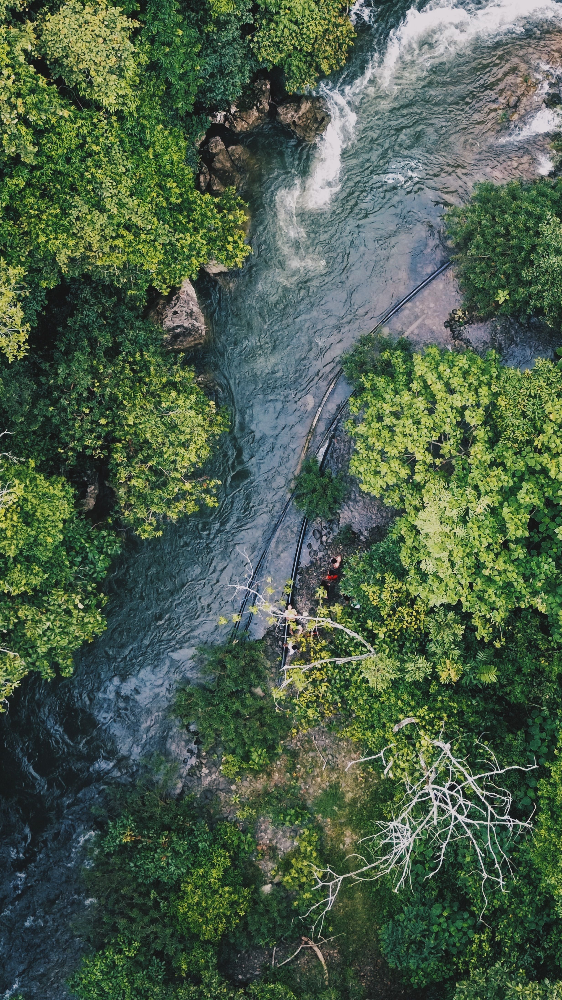

The Map
The embedded Google Earth Engine App shows year-by-year vegetation cover classification. The animation auto-plays through 2001, 2005, 2010, 2015, 2020, and 2023. Use the app controls to pause, skip, or jump to a specific year.
MODIS/061/MOD44B — Version 6.1 Vegetation Continuous Fields from NASA's Terra satellite. 250-meter spatial resolution, annual composites available from 2000 to present.
Study area: India (36 states and UTs). Years analysed: 2001, 2005, 2010, 2015, 2020, 2023. Variable: Total vegetation cover (computed as 100 − Percent_NonVegetated). Classification: 5 classes from Very Low (0–20%) to Very High (80–100%).
Platform: Google Earth Engine. Statistics: Area-weighted mean per state using pixel area to account for latitude-dependent pixel size. Masking: Valid range 0–100 only; fill value 200 excluded. Boundary: Survey of India state-level layer.
Each bar represents one year. The five coloured segments show what share of the state falls into each vegetation cover class. Hover or tap for exact percentages.
The national average vegetation cover across all 36 states, plotted for each study year. The upward trend confirms India's net greening over this period.
All 36 states sorted by vegetation cover change. Click any column header to re-sort.
| State | 2001 (%) | 2023 (%) | Change |
|---|
Between 2001 and 2023, the average vegetation cover across India's 36 states and union territories rose from 76.9% to 80.6%, a gain of 3.7 percentage points. This net increase was not uniform across the country.
The five states with the largest gains were Jharkhand (+10.1 points), Gujarat (+9.1), Bihar (+9.0), Uttar Pradesh (+8.8), and Rajasthan (+8.4). These are all in central and northern India. In each of these states, the "Very High" vegetation class expanded significantly at the expense of the "High" and "Moderate" classes, indicating a measurable shift toward denser cover.
A small number of states showed declines, all with smaller magnitudes. Lakshadweep (−4.6 points), Andaman & Nicobar (−1.7), and Manipur (−1.3) saw the largest decreases. These are small island territories and a northeastern state where factors such as cyclone damage and shifting cultivation patterns may play a role.
The data shows spatial patterns but does not explain causes. The MOD44B product measures vegetation cover percentage, not the reasons for change. It would be inaccurate to attribute the observed shifts to any specific driver — such as afforestation policy, irrigation expansion, or climate change — without supporting evidence from other datasets.
DiMiceli, C., et al. (2022). MODIS/Terra Vegetation Continuous Fields Yearly L3 Global 250m SIN Grid V061 [Data set]. NASA EOSDIS Land Processes Distributed Active Archive Center.
GEE Catalog PageState boundary polygons: Survey of India administrative boundary dataset, uploaded as a GEE asset. Only the statistical CSV derived from zonal analysis is stored in this repository. No MODIS rasters or boundary shapefiles are included.
Data processed on Google Earth Engine. MODIS MOD44B V6.1 provided by NASA/USGS via the LP DAAC. Course: Geospatial Big Data Analysis, Bharati Vidyapeeth Institute of Environment Education and Research, Pune. Course Coordinator: Dr. Aravinth R.